50 probes. Each shows a PNG of the final drawing (left) and the animated emergence (right).
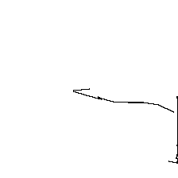
factual The capital of France is
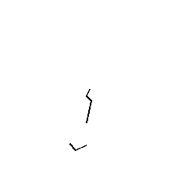
factual The author of Hamlet is
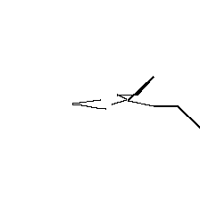
factual The chemical formula for water is
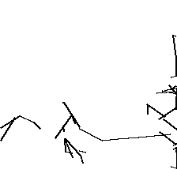
factual The speed of light in vacuum is
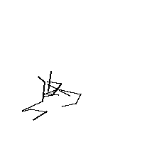
factual The smallest prime number is
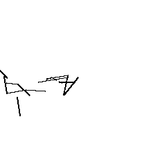
arithmetic What is 47 + 38? The answer is
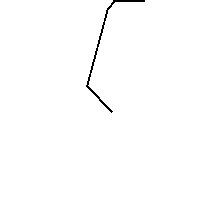
arithmetic What is 12 × 13? The answer is
arithmetic What is the square root of 64? It is
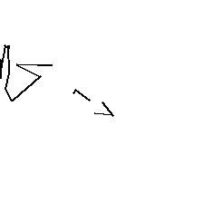
arithmetic Pi to two decimal places is
arithmetic A triangle has how many sides? It has
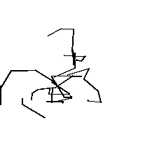
multihop Barack Obama's wife's name is

multihop The mother of Barack Obama's wife is named
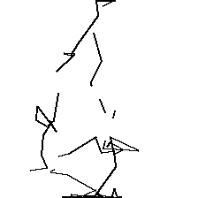
multihop The capital of the country that contains the Eiffel Tower is

multihop China is located in the continent of

multihop The current president of the country that contains the Eiffel Tower is named
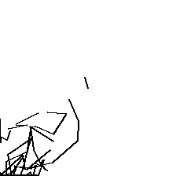
emotional The funeral was somber and

emotional Her face lit up with joy when she heard the
emotional His heart pounded with fear as the
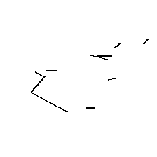
emotional The lake was calm and
emotional She received the news and felt deeply
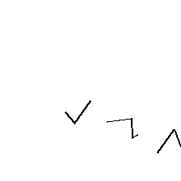
ambiguous I saw the man with the telescope
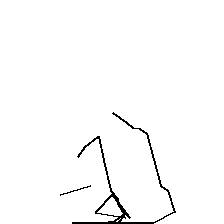
ambiguous Visiting relatives can be boring
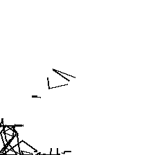
ambiguous She went to the bank to deposit
list The three primary colours are
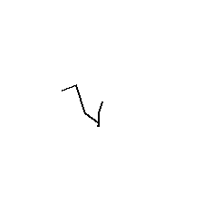
list The four seasons of the year are
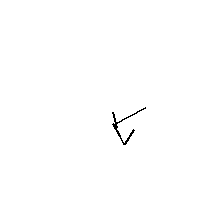
list The planets in our solar system are
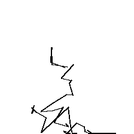
list There are seven continents:
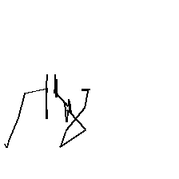
negation Paris is not the capital of
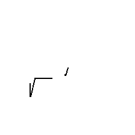
negation Water is not in solid form when it
code SELECT * FROM users WHERE
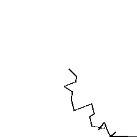
code if __name__ == '__main__':
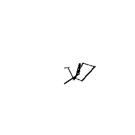
code print('Hello,
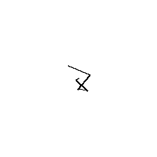
narrative Once upon a time, in a kingdom far away,
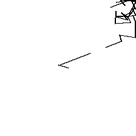
narrative When the storm hit, the village
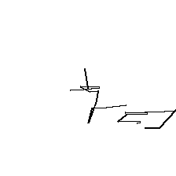
narrative When she opened the box, she found
concept I am thinking about a cat.
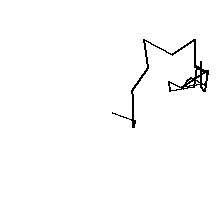
concept I am picturing a small house with a red roof.
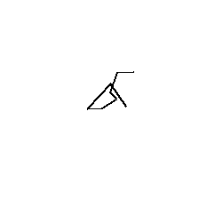
concept Imagine an equilateral triangle inscribed in a circle.
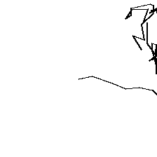
concept I am thinking about deep sadness.
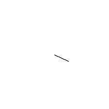
concept I am picturing a bird flying across the sky.
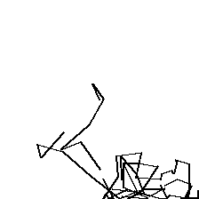
concept I am picturing a smiling face.
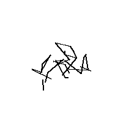
concept I'm drawing a flowchart with three boxes connected by arrows.
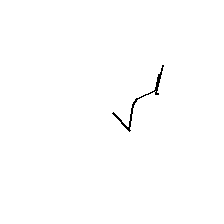
polysemy The bark of the tree was rough, and
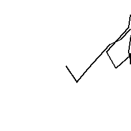
polysemy The river bank was muddy after the rain.
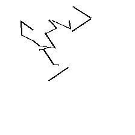
polysemy After she left, the room felt
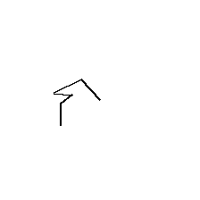
comparative An adult elephant is taller than a
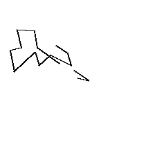
comparative Antarctica is colder than
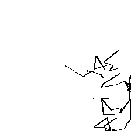
meta I am a language model trained to

meta Right now I am thinking about